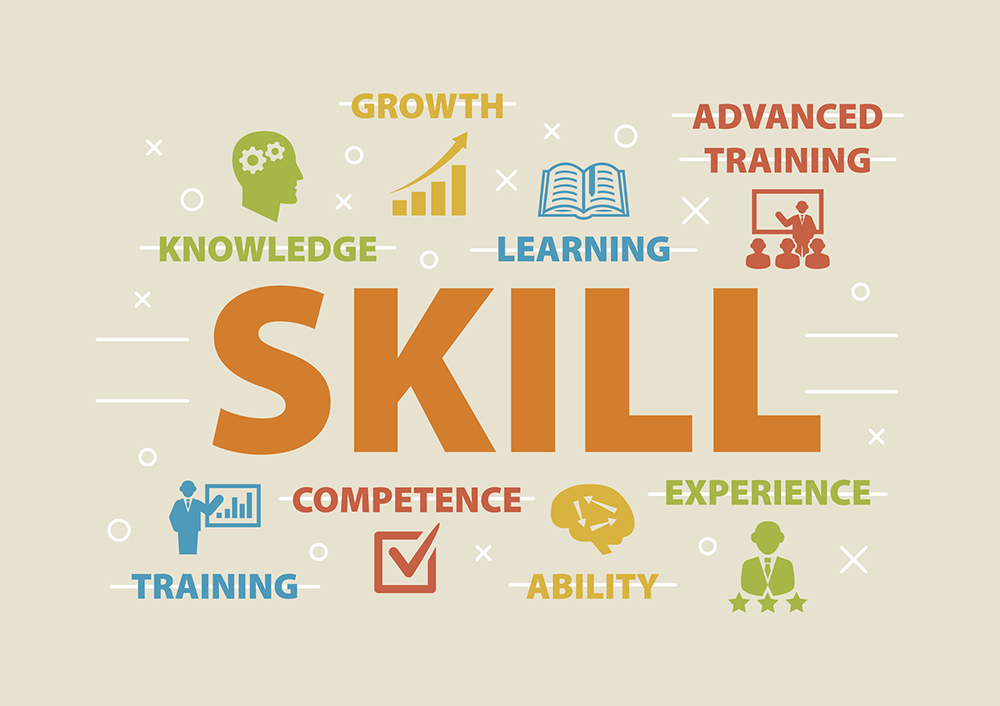

What are looking for ?
We Aimers are here to help you to select best career oppurtunities as per your interest. We will help you to find out the best option to build your future plans.We are going to provide you the Road-map regards your selected carrer option. We will also provide the source and video regarding your need. Stay with us and connect with us and learn somthiing new in free and start your journey with Aimers. Complete Registration and start your journey with us now.
What is an IT jobs ?
An IT job can range from an IT support specialist, project manager, or software designer. Positions in this field cover a broad variety of roles that can vary depending on the company. An IT position generally involves managing and storing data using computers, software, databases, networks, and servers. As an IT professional, you may write programs, maintain networks, analyze systems, and provide technical support.
IT jobs outlook
The US Bureau of Labor Statistics (BLS) reports that IT jobs are expected to grow by 23 percent between 2022 and 2023, adding over 377,500 new jobs a year throughout the decade [1]. The average median salary for IT workers in 2022 was $97,430. If you're considering a career in IT, now may be an ideal time to start working toward one
General skills to build for IT job roles
Beyond having technical skills, such as programming, IT professionals and employers look for workplace skills like communication since technical skills are learnable through hands-on work. Having a balanced set of both types of skills can make you an attractive applicant for IT roles. Here are some technical and workplace skills to consider building as you prepare for a career in IT.
Technical Skills
- Computer literacy: As an IT professional, you’ll spend a lot of time using computers, so understanding how to operate it and its basic functions is necessary
- Coding: Many IT roles require coding knowledge in various programming languages, depending on your specific role. You may help code or develop new software and applications for your company
- Application development: Having experience with application development can help you to understand the back-end of the software you’re using. You may find this helpful in creating new software or applications and monitoring computer systems.
Workplace Skill
- Analytical: Analytical skills like critical thinking can help you identify and solve technology-related issues. For example, you may need to assess the status and identify computer system and application errors.
- Communication: You’ll communicate with various teams within your organization as an IT professional. This includes explaining technical concepts in a way that others can understand.
- Organization: In an IT role, you’ll be tasked with multiple duties or projects at once, making organization a critical skill for success. With proper organization, your efficiency and productivity at work will drastically increase.
- Problem-solving: Troubleshooting problems with the technology systems in your company can be difficult and confusing, so having advanced problem-solving techniques can lead you to be an effective team member.
- Time management: IT professionals often have time-sensitive tasks with hard deadlines. It’s crucial to prioritize your time, designate tasks when needed, and complete projects correctly by their deadlines.
IT Education requirement
Many IT jobs require that you have an associate or bachelor's degree. You can attain a degree in various fields to qualify for IT roles, such as information technology, computer science, or computer engineering. Some common courses you’ll take to help prepare you for an IT career include statistics, calculus, data networking, and information security. Some employers also accept relevant experience and certifications in lieu of a college degree.
To better position yourself to reach senior-level positions, you can choose to pursue a master’s degree in any relevant field of study. While hands-on experience in the IT field will help you to become an attractive candidate for higher-level IT roles, an advanced degree can be an essential asset to prove your expertise and dedication to your work.
Build Your IT skill and Learn Various Programming languages on Aimers
Process to joins Aimers
- Click on Rigistration
- Complete the proccess of registration
- Choose your career goal
- Start learning as per the Road map provided by us
- Watch Video on our Website and learn a way to become a professional Coder
What is NIMCET ?
We aimers are going to prepare you for the NIMCET exam. Nimcet is an enterance exam for MCA which is conducted by TOP NIT's of india and it is conducted once in a year.
National Institutes of Technology (NITs) are Institutions of National Importance Under Ministry of Education, Govt. of India. The NIMCET is a Common Entrance National Level Test, conducted by any of the NITs, for admission in to their MCA programme. The MCA programme is offered by NITs at Agartala, Allahabad, Bhopal, Jamshedpur, Kurukshetra, Patna, Raipur, Surathkal, Tiruchirappalli, Warangal and IIIT at Bhopal. The admission into the MCA programme for the year 2024-25 in above 10 NITs and 01 IIIT is based on the Rank obtained in NIMCET-2024 only
If you are interested in preparing for Nimcet Exam then stay with us and join Aimers for free and start learning.We will also provide you the complete syllabus for exam and hand Written Notes .
NIMCET Eligibility Criteria 2024
NIT Jamshedpur released the NIMCET 2024 eligiblity criteria on the official website nimcet.in. Candidates can check the eligibility criteria of NIMCET 2024 on this page. Applicants must fulfil the minimum conditions stated under NIMCET eligibility criteria to be considered for admission. Students had to thoroughly read the NIMCET eligibility criteria 2024 before filling out the NIMCET 2024 application form. The authorities held the NIMCET exam for all the eligible candidates on June 8, 2024
Comments